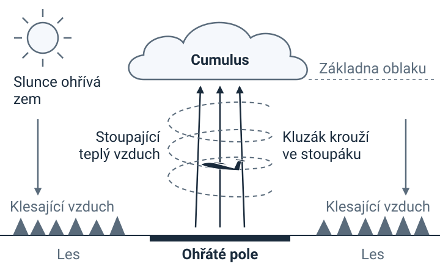
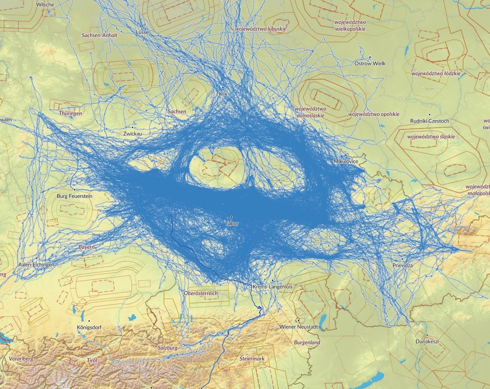
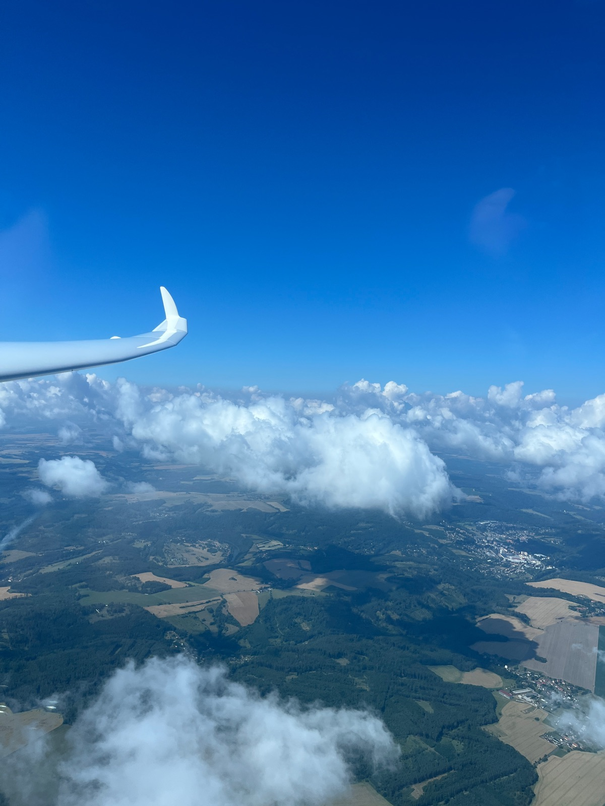
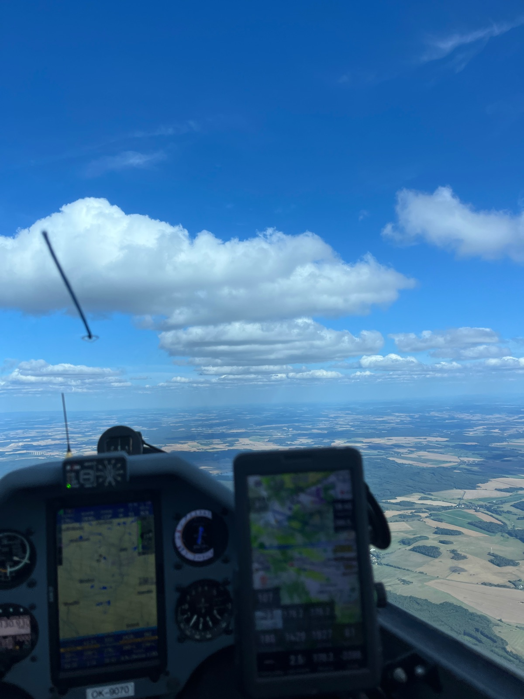

Termické létání
V Česku se většina letů, a hlavně dálkových přeletů, létá v termice. Za dobrého dne se s moderním kluzákem dá uletět až kolem 1 000 km, jen díky teplému vzduchu stoupajícímu od země.
Princip
Slunce neohřívá krajinu rovnoměrně. Pole, vesnice nebo kamenolom se zahřejí rychleji než les či louka, a vzduch nad nimi je proto teplejší. Ve chvíli, kdy je dost teplý, odtrhne se od země a stoupá jako bublina nebo sloupec. Tomu se říká stoupavý proud, mezi piloty „stoupák“.
Stoupající vzduch se ochlazuje. Pokud obsahuje dost vlhkosti, vlhkost zkondenzuje a na vrcholu stoupavého proudu vznikne oblak. Takové oblačnosti se říká kupovitá, odborně cumulus. Pilot proto stoupání nejčastěji hledá pod kupovitou oblačností, hlavně pod cumuly, které ještě rostou.
Kluzák nabírá výšku tak, že vletí do stoupavého proudu a krouží v něm v těsných zatáčkách. Stoupá většinou až k základně oblaku, nebo dokud stoupání nezeslábne. Pak klouže k dalšímu stoupáku a celé se to opakuje. Přelet je tak střídání kroužení a přeskoků.

Kde v Česku
Termika vzniká prakticky nad celou republikou a létá se z desítek aeroklubových letišť. Jak silná bude, ovlivňuje hlavně reliéf krajiny a druh povrchu. Suchá pole a města se ohřívají rychle, nad vodními plochami, mokrými loukami a velkými lesy bývá stoupání slabé nebo žádné. Ráno a večer, kdy je slunce nízko, fungují nejlépe nasvícené svahy, protože na ně slunce dopadá strměji než na rovinu. Podle toho se plánuje i trať přeletu, aby vedla krajinou, která je v danou denní dobu nejaktivnější.
Létat se dá skoro nad celou republikou, a to volně až do letové hladiny FL 95, tedy přibližně do 2 900 m nad mořem. Pod touto výškou platí jen dva druhy omezení. Do zakázaných prostorů, například nad Pražským hradem, a do vojenských prostorů v době jejich aktivace kluzák vletět nesmí. Řízené prostory kolem letišť zakázané nejsou, ale pilot se musí spojit s řídícím letového provozu a ten mu vstup povolit nemusí. Nejpřísnější je prostor kolem Prahy, kam kluzák bez letového plánu nesmí vůbec. V praxi se tam proto s kluzáky nelétá a na mapě je kolem Prahy prázdné místo.


Podmínky a sezóna
- Sezóna
- od dubna do září, nejsilnější termika bývá od května do července.
- Denní průběh
- Termika začíná dopoledne, kdy je slunce ještě nízko a zem se teprve ohřívá. Nejsilnější je kolem poledne a odpoledne, kdy slunce svítí nejstrměji, a k večeru s klesajícím sluncem slábne. Za nejdelších dnů, od května do července, se dá využít přibližně od 10 do 19 hodin.
- Ideální den
- studený, sušší vzduch po přechodu fronty, slabý vítr a pěkně vyvinutá kupovitá oblačnost.
- Modrá termika
- Někdy stoupavé proudy existují, ale oblaky se nevytvoří. Vzduch je buď tak suchý, že v něm vlhkost nezkondenzuje, nebo stoupání zastaví teplejší vrstva vzduchu (inverze) dřív, než do výšky kondenzace dojde. Létat se dá i tak, jen bez oblaků jako ukazatele. Pilot pak stoupáky odhaduje podle terénu, tedy nad poli, městy a nasvícenými svahy, které se nejvíc ohřívají, a podle jiných kroužících kluzáků nebo ptáků.
Moje zkušenost
Přelety, tedy lety po trati daleko od domovského letiště, létám od roku 2022, kdy jsem udělal první pokusy. Od té doby létám pravidelně a účastním se soutěží. Můj zatím nejdelší přelet měřil 870 km. V roce 2025 jsem získal diplom FAI za přelet 750 km a mým dalším cílem je uletět 1 000 km.
